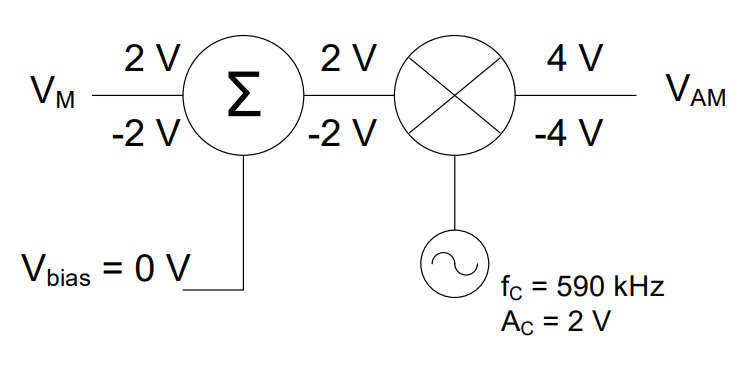
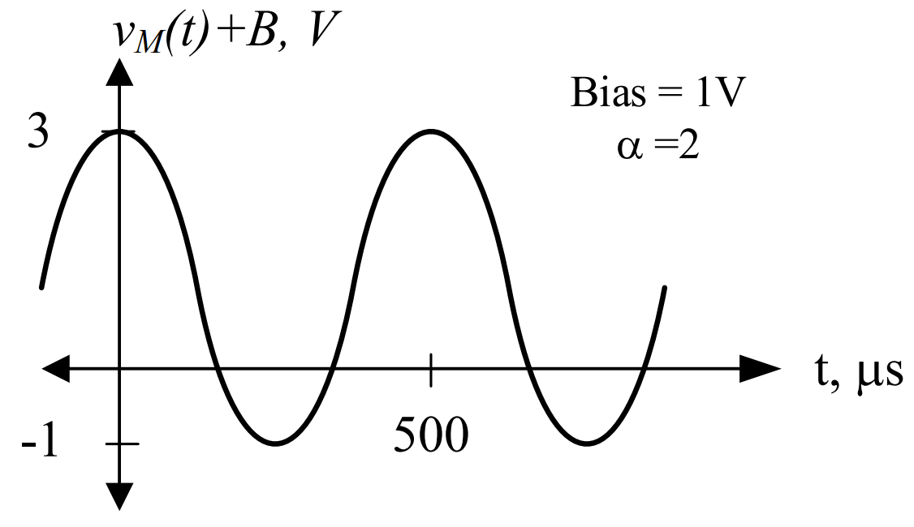
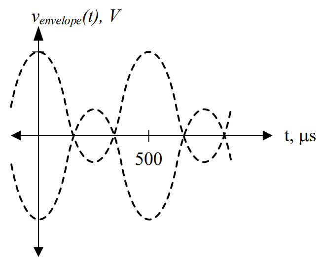

Objective 1.7#
LO# |
Description |
|---|---|
1.7 |
I can calculate the efficiency, source voltage, and current of a power transmission system with one or more power converters. |
AC-to-DC Conversion#
Although transformers make it more efficient to transmit AC power over long distances, many devices require DC power to operate. Computers, for instance, need DC power to run all of the data processing circuitry that makes a computer useful. Even though we plug them directly into our wall outlets, they actually have built-in AC-to-DC Converters (ADC) to provide the necessary DC power. Furthermore, anything that runs off of battery power, such as cell phones or tablets, uses DC power. When we charge these devices, the charger converts an outlet’s 120 VRMS signal into an appropriate DC signal. In this lesson, we will explain how ADCs work.
Basics of AC-to-DC Conversion#
The most basic AC-to-DC Converter is the half-wave rectifier. To understand how this type of converter works, we need to introduce two common electrical devices:
A diode is a semiconductor device that allows electricity to flow in only one direction. The light-emitting diode (LED) is the most commonly seen diode, but electrical engineers use diodes for many other applications. This device is basically a “one-way” valve for current to flow through. We can use a diode to convert an alternating signal into one that is ALWAYS positive (a process called rectification). This process is needed in AC-to-DC Conversion.
A capacitor is a storage device that acts like a temporary battery. If a voltage is present across the capacitor, it will charge up to that voltage. If the voltage is taken away, it will discharge if connected to a load. It is important to know that this charging and discharging does not happen instantaneously. For this reason, capacitors can be used to smooth the rectified signal.
Let’s take a close look at a general AC signal, starting at time t = 0 sec, and consider what is really going on with this signal.
Figure 1: Voltage of a general AC signal
We can think of the voltage as a pushing force that causes electrons to move. When we first start on the graph at 0 ms, the pushing force of the signal is at 0V. As time passes, however, this pushing force begins to increase until it reaches its peak voltage. As time passes even further, the pushing force decreases until it reaches 0V, then turns negative and continues to decrease until it reaches its minimum. At this point, it starts increasing until it returns to its peak voltage.
Now think about the current this changing voltage would produce. When the voltage is positive, the pushing force pushes electrons through the circuit in one direction. When the voltage is negative, however, it becomes a negative pushing force, which pulls the electrons the other way. Push, pull. Push, pull. Push, pull.
Figure 2: Current of a general AC signal
That’s why it is called an alternating current: it spends half the time flowing forward and the other half flowing back.
Key Point: Negative currents are just currents flowing in the opposite direction than expecxted, and negative voltages are just voltages that are opposite of the polarity shown on the device.
What would happen if we allowed this signal to pass through a diode, which only allows current to flow in one direction? As Figure 1Figure 3 below shows, the diode blocks the negative part of the signal from passing through, but lets the positive part continue. This occurs for both the voltage and the current.
Figure 3: Voltage of a general AC signal before (left) and after (right) passing through a diode
Even though the signal coming out of the diode is not a DC signal, we’ve gotten rid of all the negative voltages, which means we’re one step closer. Instead of push, pull, the signal is now push, pause, push, pause. The signal is now said to be rectified, and more specifically, we can say the signal is half-wave rectified because only half of the waveform is allowed to pass. This is where we get the term half-wave rectifier.
The key is understanding that the signal at the input of the diode has an average voltage over time of 0V, while the output signal has an average voltage over time greater than 0V.
Now that we know how the diode affects the signal, let’s look at the effects of the capacitor and its contribution to the resultant signal. When adding the capacitor to the half-wave rectifier, the capacitor must be placed in series with the diode and voltage source, as shown in Figure 4.
Figure 4: A half-wave rectifier without a load
As said earlier in this reading, a capacitor acts as a temporary battery. At “t1” ms in Figure 5, the output of the diode (shown as the dashed line) is at its peak. This voltage quickly charges the capacitor to the same value. Since no power is being consumecd by the circuit, the output—represented by the solid line—remains constant. Interestingly, capacitors do not consume power, but rather, they store power in electric fields. The specifics of this will be covered in more detail in Lesson 15.

Figure 5: Voltage of a rectified signal (dashed line) and capacitor voltage (solid line)
In this ideal case, where the ADC is not supplying power to anything,
Now, in order to supply power to a load, we need to place the load (RLoad) on the output of the ADC. We do this by placing that load in parallel with the capacitor, thereby ensuring that the load gets the same voltage as the capacitor. This is shown in Figure 6. It is important to note that RLoad is not actually part of the ADC. Instead, it is the tablet, cell phone, or computer that uses the DC power that is created.
Figure 6: A half-wave rectifier with a load
At “t1” ms in Figure 7, the output of the diode (shown as the dashed line) is at its peak. As stated earlier, this voltage quickly charges the capacitor to the same value. In Figure 5, the voltage over the capacitor remained constant once it was charged up; however, that is not the case when a load is added to the output. When the output of the diode starts to drops off towards zero volts, the capacitor starts providing current to the load. This current pulls power from the capacitor, causing it to be consumed in the load. When this occurs, the voltage across the capacitor drops slightly, which means Vout also decreases. Next, the voltage from the diode reappears and climbs back towards its peak, charging the capacitor back up to Vpeak and continuing the cycle. We call this variation in voltage over time a “ripple”. The resultant output in Figure 7 is not a perfect DC signal, but it’s reasonably close.

Figure 7: Voltage of a rectified signal (dashed line) and output voltage over a load (solid line)
The rate at which the capacitor voltage decreases is determined by two things: the size of the capacitor (bigger is better) and the magnitude of RLoad (a smaller RLoad means the capacitor discharges faster). A bigger capacitor can store more power, and a smaller RLoad draws more current from the capacitor. The bottom line is the diode blocks negative current (creating a rectified voltage), and the capacitor smoothes out the bumps.
AC-to-DC Conversion#
Before we look at ADCs from a block diagram perspective, let’s look at the overall process. It typically takes four steps to convert an AC signal into the needed DC format:
Transformation: While this step is sometimes optional, we rarely get the exact AC signal that we need for our ADC. We often have to step-down the 120 VRMS coming out of the wall outlet to more acceptable levels. Also, there are times where we would need a large DC voltage and will require a step-up of the AC voltage. Remember, the output VDC is related to the rectified Vpeak, so a transformer is used to get the correct Vpeak input.
Rectification: Rectification is sometimes used synonymously with AC-to-DC Conversion because this is where most of the work is performed. Rectifiers eliminate the negative portion of the AC signal and translate as much of the AC signal’s energy into DC as possible. The half-wave rectifier described earlier is the simpliest design; however, diode circuits, such as the full-wave rectifier, are more common and more efficient.
Smoothing: Typically, a capacitor is used to smooth out the final output, as was shown in Figure 7. In smoothing, the rectified signal is converted into a more consistent voltage than can be used by the DC-powered device.
Regulation: Most times, the ripple after smoothing cannot be tolerated by the load. In order to remove the ripple, a voltage regulator can be used after smoothing. A voltage regular ensures that a constant voltage level is provided to the DC-powered device; however, it does so by slightly reducing the DC output voltage. One perk to voltage regulators is that they can minimize the effect of changing RLoad.
Figure 8 below shows the different steps of the AC-to-DC Conversion process.
Figure 8: The steps in the AC-to-DC conversion process
For the rest of this lesson, this process will be displayed as a block diagram. The “XFMR” block will represent the transformation step, and a “AC/DC” Block will represent rectification, smoothing, and regulation. If a half-wave rectifier and capacitor were used with a transformer in an ADC design, the design could be represented using a block diagram, schematic, or combination of both, as shown in . In this case, the ADC is in series with the transformer.
Figure 9: Block diagram of AC-to-DC conversion process
Figure 10: Schematic of AC-to-DC conversion process
Example Problem 1#
The AC signal, v(t) = 169.7cos(360° × 1kt) V is input into an ideal half-wave rectifier with a 10:1 turns ratio transformer. What is the DC output, neglecting the ripple?
Understand: We will need to step down the voltage before solving for our final DC output.
Identify Key Information:
Knowns: The input AC voltage, frequency, and the turns ratio of the transformer.
Unknowns: The output voltage, VDC,out
Assumptions: We are dealing with an ideal transformer.
Plan: We can use the turns ratio to determine the input voltage to the ADC, then because the converter is not loaded, the output voltage will be equal to the input voltage.
Solve: The input voltage is stepped down by the transformer:
Since the converter is unloaded, the DC voltage coming out of the converter is then the peak voltage of the signal going into the converter:
Answer: The DC output from the AC-to-DC Converter is 16.97 V.
Example Problem 2#
Assume the AC/DC block below is limited to the rectification, smoothing and regulation stages, and the required input should be 8V. Given a source voltage \(v_{s}(t) = 120\cos(360{^\circ} \times 60t)V\), determine the turns ratio of the transformer to make the circuit work.
Understand: This is very similar to the previous problem, as we will need a transformer to step down the voltage, but we notice the output of the converter is not quite equal to the peak input signal. This is a much more realistic problem than the first example. We will actually have to work backwards to decide what kind of transformer is needed.
Identify Key Information:
Knowns: We know the source voltage and the input and output voltages of the converter.
Unknowns: The turns ratio of the transformer.
Assumptions: Since the output voltage of the converter is less than the peak input, we assume the ADC is inefficient.
Plan: Since we know the basic design for our ADC, we draw the following block diagram:
The key to this problem is realizing the peak voltages will be used to determine the turns ratio. These voltages could be given, like the input of the ADC (8V), or provided in an equation, like the input (vS(t)). However, the bottom line is that the transformer has to step the 120V signal down to 8V. The ADC will then change it to 6VDC. This means we will need to use the input voltage of the converter to determine the output voltage of the transformer. Then, we will use the turns ratio equation.
Solve: We determine the turns ratio of the transformer using the peak voltages of the components:
Answer: The design to convert 120 cos(360⁰ * 60t) V to 6VDC is:
Example Problem 3#
The ADC in the previous problem is used to power an electric drill, modeled as a 180-Ω resistor. If the ADC has an efficiency of 80%, how much power must the source provide?

Understand: Realistically, ADCs are not 100% efficient; therefore, if we need to follow power/current/voltage values through the system, knowing the efficiency is important. In this case, we will work backwards by first considering the power consumed by the drill as well as the power lost in the ADC process.
Identify Key Information:
Knowns: We know the amplitude of the source voltage, the turns ratio of the transformer (XFMR), the efficiency of the ADC, the output voltage of the converter, and the resistance of the drill.
Unknowns: The current and power provided by the source.
Assumptions: The source will supply all the power needed by the circuit. Also, we are dealing with an ideal transformer.
Plan: Since we know the voltage and resistance of the drill, we can calculate the power it consumes and current it draws. We can then use the definition of efficiency to determine the power on the input side of the ADC. Finally, by using the fact the input power and the output power of the transformer are equivalent, we can find the power supplied by the source.
Solve: First, let’s figure out the useful power, which is the amount of power the drill consumes. Consider the following circuit:

We’ve modeled the entire ADC (with transformer) into a single 6 VDC source, which helps us figure out the power consumed by the drill. Since these two devices are in parallel, they share the same voltage of 6V. Therefore, the power consumed by the drill is
We will assume that all of this power is useful power. Now let’s look at just the ADC:

We have some power that is provided to the converter, Pin. If we think about Pin as the power that must be produced in order to provide Pout as the useful power, our efficiency equation becomes:
Solving for Pin:
Therefore, we need to provide 250mW to the ADC so it can provide 200 mW to the drill. Finally, since the transformer is 100% efficient, we can assume PS = Pin = 250 mW.
Finally, just to check our answer, let’s look at what happens to the power in the entire system:

We start with PS, which is the power produced by the source. This power passes through a transformer, but since the transformer is 100% efficient, it does not lose any power (PS = Pin = 250 mW). This power then goes to an ADC, which loses 20% in the conversion process. The output is 200 mW. This confirms our initial answer.
Answer: The source has to produce 250 mW.